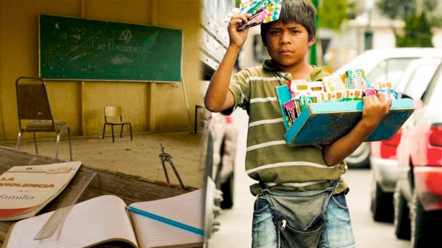

Existen diversas causas que pueden llevar a un estudiante a abandonar la escuela, y muchas veces estas razones están interrelacionadas. Las más comunes incluyen:
1. Factores socioeconómicos: La falta de recursos económicos es una de las principales causas del abandono escolar. En familias con dificultades económicas, los jóvenes se ven obligados a trabajar para ayudar en el sustento del hogar, lo que impide que continúen con sus estudios.
2. Bajo rendimiento académico: Las dificultades de aprendizaje o un bajo rendimiento académico sostenido pueden desmotivar a los estudiantes. Muchos jóvenes que enfrentan estos problemas sienten que no pueden avanzar y optan por dejar la escuela.
3. Problemas familiares: La desintegración familiar, la violencia en el hogar, o el abandono emocional por parte de los padres o tutores impactan negativamente el bienestar emocional y académico del estudiante, llevándolo a desertar.
4. Falta de interés y motivación: Algunos estudiantes no encuentran sentido o relevancia en los contenidos que se enseñan en las escuelas, lo que puede disminuir su interés por continuar asistiendo. Esto se ve agravado cuando las escuelas no adaptan sus métodos educativos para ser más atractivos y dinámicos.
5. Embarazo adolescente: En muchas comunidades, el embarazo en jóvenes es una de las principales razones por las que las estudiantes dejan de asistir a clases, ya que enfrentan barreras para continuar con sus estudios mientras cuidan de sus hijos.
6. Acceso limitado a la educación: En zonas rurales o marginadas, la falta de infraestructura educativa o la distancia de los centros educativos pueden ser un factor importante que promueve el abandono escolar.
CAUSAS DEL ABANDONO ESCOLAR CONSECUENCIA TALLERES PREVENIR EL ABANDONO EL PAPEL DE LA FAMILIA APOYO DISPONIBLE